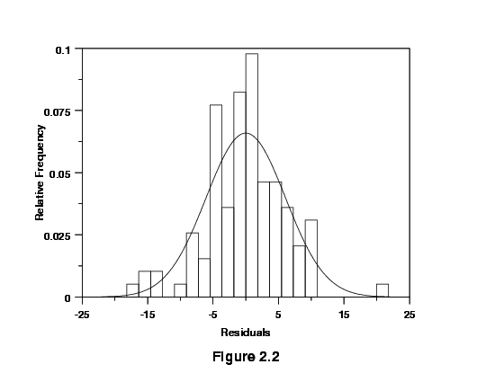
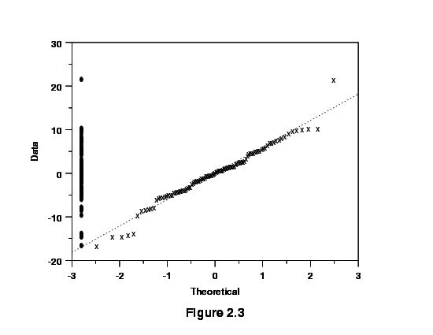
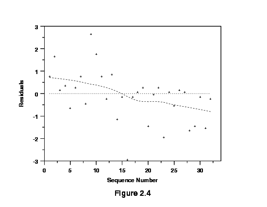
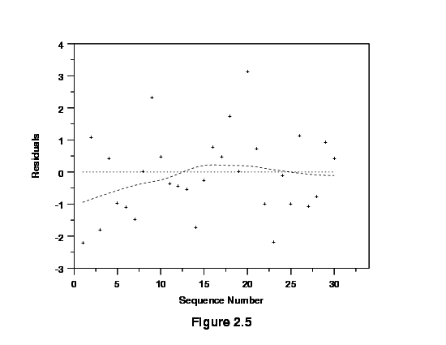

|
5.
Process Improvement
5.2. Assumptions
|
|||
| Residuals are the differences between the observed and predicted responses |
Residuals are estimates of experimental error obtained by subtracting
the observed responses from the predicted responses.
The predicted response is calculated from the chosen model, after all the unknown model parameters have been estimated from the experimental data. Examining residuals is a key part of all statistical modeling, including DOE's. Carefully looking at residuals can tell us whether our assumptions are reasonable and our choice of model is appropriate. |
||
| Residuals are elements of variation unexplained by fitted model | Residuals can be thought of as elements of variation unexplained by the fitted model. Since this is a form of error, the same general assumptions apply to the group of residuals that we typically use for errors in general: one expects them to be (roughly) normal and (approximately) independently distributed with a mean of 0 and some constant variance. | ||
| Assumptions for residuals |
These are the assumptions behind ANOVA and classical regression
analysis. This means that an analyst should expect a regression model
to err in predicting a response in a random fashion; the model should
predict values higher than actual and lower than actual with equal
probability. In addition, the level of the error should be independent
of when the observation occurred in the study, or the size of the
observation being predicted, or even the factor settings involved in
making the prediction. The overall pattern of the residuals should be
similar to the bell-shaped pattern observed when plotting a histogram
of normally distributed data.
We emphasize the use of graphical methods to examine residuals. |
||
| Departures indicate inadequate model | Departures from these assumptions usually mean that the residuals contain structure that is not accounted for in the model. Identifying that structure and adding term(s) representing it to the original model leads to a better model. | ||
| Tests for Residual Normality | |||
| Plots for examining residuals |
Any graph suitable for displaying the distribution of a set of data
is suitable for judging the normality of the distribution of a group of
residuals. The three most common types are:
|
||
| Histogram |

The histogram is a frequency plot obtained by placing the data in regularly spaced cells and plotting each cell frequency versus the center of the cell. Figure 2.2 illustrates an approximately normal distribution of residuals produced by a model for a calibration process. We have superimposed a normal density function on the histogram. |
||
| Small sample sizes | Sample sizes of residuals are generally small (<50) because experiments have limited treatment combinations, so a histogram is not be the best choice for judging the distribution of residuals. A more sensitive graph is the normal probability plot. | ||
| Normal probability plot |
The steps in forming a normal probability plot are:
|
||
| Sample normal probability plot with overlaid dot plot |
Figure 2.3 below illustrates the normal probability graph created from
the same group of residuals used for Figure 2.2.
 This graph includes the addition of a dot plot. The dot plot is the collection of points along the left y-axis. These are the values of the residuals. The purpose of the dot plot is to provide an indication the distribution of the residuals. |
||
| "S" shaped curves indicate bimodal distribution |
Small departures from the straight line in the normal probability plot
are common, but a clearly "S" shaped curve on this graph suggests a
bimodal distribution of residuals. Breaks near the middle of this graph
are also indications of abnormalities in the residual distribution.
NOTE: Studentized residuals are residuals converted to a scale approximately representing the standard deviation of an individual residual from the center of the residual distribution. The technique used to convert residuals to this form produces a Student's t distribution of values. |
||
| Independence of Residuals Over Time | |||
| Run sequence plot | If the order of the observations in a data table represents the order of execution of each treatment combination, then a plot of the residuals of those observations versus the case order or time order of the observations will test for any time dependency. These are referred to as run sequence plots. | ||
| Sample run sequence plot that exhibits a time trend |  | ||
| Sample run sequence plot that does not exhibit a time trend |  | ||
| Interpretation of the sample run sequence plots |
The residuals in Figure 2.4 suggest a time trend, while those in Figure
2.5 do not. Figure 2.4 suggests that the system was drifting slowly to
lower values as the investigation continued. In extreme cases a drift
of the equipment will produce models with very poor ability to account
for the variability in the data (low R2).
If the investigation includes centerpoints, then plotting them in time order may produce a more clear indication of a time trend if one exists. Plotting the raw responses in time sequence can also sometimes detect trend changes in a process that residual plots might not detect. |
||
| Plot of Residuals Versus Corresponding Predicted Values | |||
| Check for increasing residuals as size of fitted value increases | Plotting residuals versus the value of a fitted response should produce a distribution of points scattered randomly about 0, regardless of the size of the fitted value. Quite commonly, however, residual values may increase as the size of the fitted value increases. When this happens, the residual cloud becomes "funnel shaped" with the larger end toward larger fitted values; that is, the residuals have larger and larger scatter as the value of the response increases. Plotting the absolute values of the residuals instead of the signed values will produce a "wedge-shaped" distribution; a smoothing function is added to each graph which helps to show the trend. | ||
| Sample residuals versus fitted values plot showing increasing residuals |
|
||
| Sample residuals versus fitted values plot that does not show increasing residuals |
|
||
| Interpretation of the residuals versus fitted values plots | A residual distribution such as that in Figure 2.6 showing a trend to higher absolute residuals as the value of the response increases suggests that one should transform the response, perhaps by modeling its logarithm or square root, etc., (contractive transformations). Transforming a response in this fashion often simplifies its relationship with a predictor variable and leads to simpler models. Later sections discuss transformation in more detail. Figure 2.7 plots the residuals after a transformation on the response variable was used to reduce the scatter. Notice the difference in scales on the vertical axes. | ||
| Independence of Residuals from Factor Settings | |||
| Sample residuals versus factor setting plot |
|
||
| Sample residuals versus factor setting plot after adding a quadratic term |
|
||
| Interpreation of residuals versus factor setting plots | Figure 2.8 shows that the size of the residuals changed as a function of a predictor's settings. A graph like this suggests that the model needs a higher-order term in that predictor or that one should transform the predictor using a logarithm or square root, for example. Figure 2.9 shows the residuals for the same response after adding a quadratic term. Notice the single point widely separated from the other residuals in Figure 2.9. This point is an "outlier." That is, its position is well within the range of values used for this predictor in the investigation, but its result was somewhat lower than the model predicted. A signal that curvature is present is a trace resembling a "frown" or a "smile" in these graphs. | ||
| Sample residuals versus factor setting plot lacking one or more higher-order terms |
|
||
| Interpretation of plot | The example given in Figures 2.8 and 2.9 obviously involves five levels of the predictor. The experiment utilized a response surface design. For the simple factorial design that includes center points, if the response model being considered lacked one or more higher-order terms, the plot of residuals versus factor settings might appear as in Figure 2.10. | ||
| Graph indicates prescence of curvature | While the graph gives a definite signal that curvature is present, identifying the source of that curvature is not possible due to the structure of the design. Graphs generated using the other predictors in that situation would have very similar appearances. | ||
| Additional discussion of residual analysis | Note: Residuals are an important subject discussed repeatedly in this Handbook. For example, graphical residual plots are discussed in Chapter 1 and the general examination of residuals as a part of model building is discussed in Chapter 4. | ||